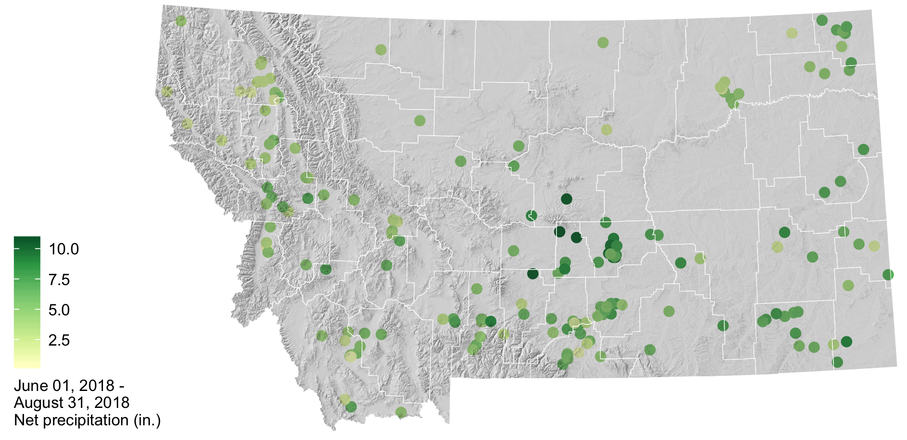

2018–2019 Winter Outlook
A new Montana Mesonet station near Miles City, MT. There are currently 50 stations across the state recording soil moisture and weather conditions. Real time data can be viewed at climate.umt.edu/mesonet/Stations. Photo: Kevin Hyde.
Welcome to the October 2018 Montana Drought & Climate newsletter. We hope that Montana farmers and ranchers find the information here useful. Please send us your feedback!
Here’s what you’ll find in this newsletter:
Summer 2018 Review — Understanding current and past conditions aids in predicting future conditions. This section provides an overview of what happened this past summer.
Winter 2018–2019 Forecast — The seasonal forecast discusses predictions for temperature, precipitation, and drought, as well as the global air circulation patterns that impact growing conditions and water availability in Montana.
Reference — A helpful glossary of terms found in this newsletter.
In Brief
- This past summer was drier than normal in northern and northwestern Montana, while the southern and eastern portions of the state had much more precipitation than normal.
- Drought declarations in northern and northwestern Montana were mainly in response to low summer precipitation in those regions, though soil moisture remained high east of the continental divide throughout the summer.
- There is a high probability of El Niño conditions arriving this winter, which on average lead to slightly drier conditions across central Montana, and warmer conditions throughout the state.
- The NOAA seasonal forecast, which takes El Niño and other current climate patterns into account, is for warmer and drier conditions statewide this winter. Keep this in mind when planning for planting conditions next spring.
Contribute to the CoCoRaHS network
The Community Collaborative Rain Hail & Snow Network (CoCoRaHS) is a volunteer program to enhance precipitation records across North America, and deliver those records via a simple to use database. People throughout Montana have been involved in CoCoRaHS data collection for over twenty years. The CoCoRaHS network data is frequently used by land managers and climatologists for management, research, and monitoring applications. This map shows the locations of all active CoCoRaHS stations in the state, and their recorded net precipitation in April and May. To learn more, search the data, or get involved, visit https://www.cocorahs.org/.

About Montana Drought & Climate
and the Montana Climate Office
Montana Drought and Climate is a USDA-funded project of the Montana Climate Office (MCO) at the W.A. Franke College of Forestry & Conservation at the University of Montana, in collaboration with the Montana State University Extension Service. The MCO is an independent state-designated body that provides Montanans with high-quality, timely, relevant, and scientifically-based climate information and services. We strive to be a credible and expert source of information for decision makers that rely on the most current information on climate to make important decisions. It is also the role of the MCO to assist stakeholders in interpreting climate information or adapting climate products to their needs.
Production of this newsletter is supported by Water for Agriculture Challenge Area grant no. 2017-67027-26313 from the USDA National Institute of Food and Agriculture and by the Montana Water Center. Any opinions, findings, conclusions, or recommendations expressed in this publication are those of the author(s) and do not necessarily reflect the view of the U.S. Department of Agriculture, the Montana Water Center, or the University of Montana. Please refer to the Montana Climate Office user agreement and disclaimer at climate.umt.edu/disclaimer.

 Montana Climate Office
Montana Climate Office
Montana Forest & Conservation Experiment Station
University of Montana
32 Campus Drive
Missoula, MT 59812
P: (406) 243-6793
E: mtdrought@umontana.edu
W: http://climate.umt.edu/